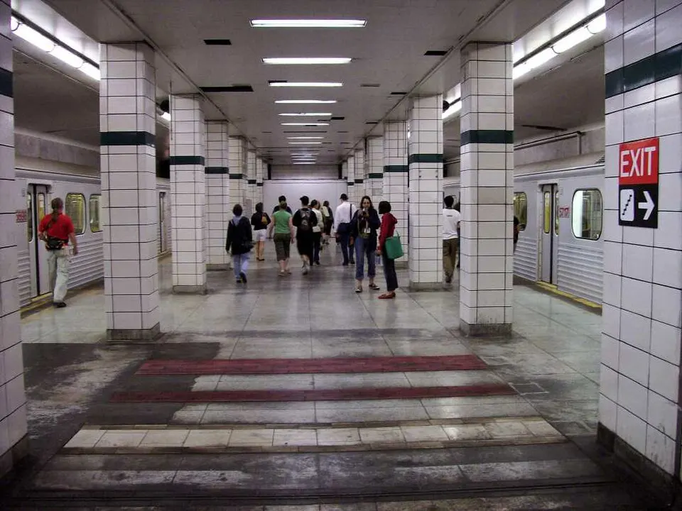

Signal
SignalStation atlas / Bay Lower (Lower Bay)
Former station or platform
Bay Lower (Lower Bay)


Station history
In February, the lower level of Bay opened for passenger trains linking the Bloor–Danforth subway to the University line.
After six months, regular service ended on the lower level. The TTC later used it for training and filming. The upper Bay station remained in passenger service.
The TTC invited visitors to tour the lower level during Doors Open Toronto.